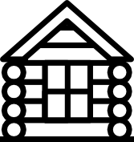
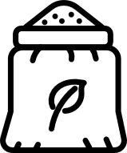
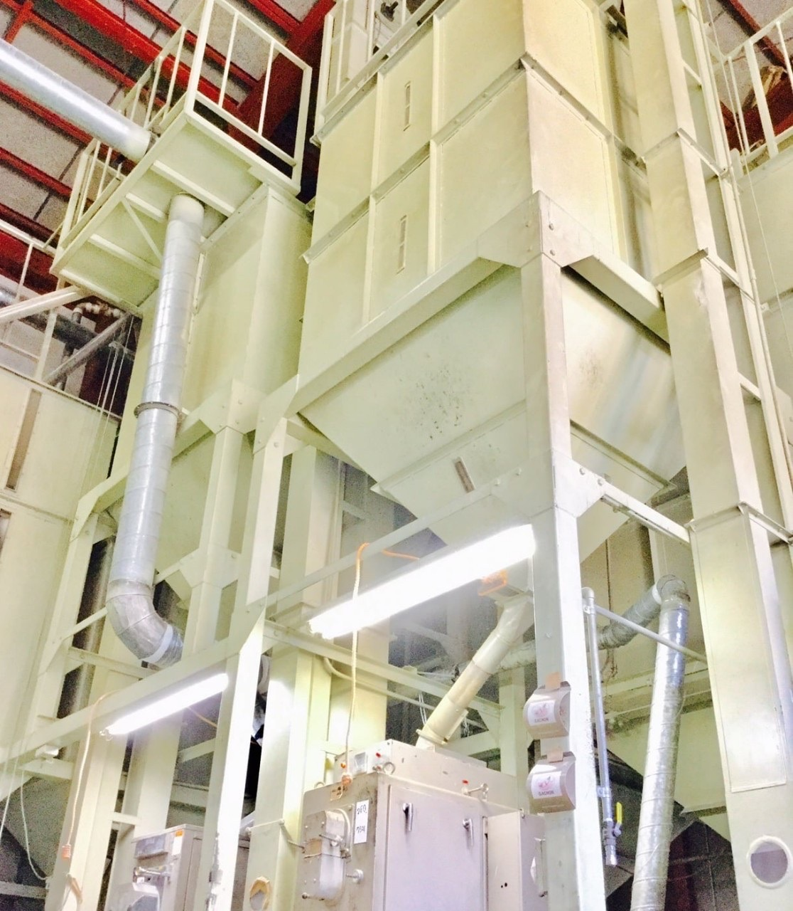

食を通じて
心とからだに
健康をもたらす
地域密着の事業者としての信頼に応え、
安心安全な日本の食文化形成を担う企業となることを目指します。
service
安心安全な商品や技術を提供する
To provide safe and secure products and technologies関庄糧穀株式会社は、岩手県花巻市を拠点にお米の集荷販売等を行っている会社です。
安心安全な日本の食文化を次世代へ伝承していくため、創業当時からの取引農家を含め、生産者の顔の見えるお米の販売を心掛けていきます。
strengths
事業内容
service

米雑穀類の集荷及び保管
Collection / Storage農産物の検査
Inspection

食料品の製造並びに販売
Manufacture / Sales肥料、飼料、農薬の販売
Fertilizers食品用機械器具の販売
MachinerySafety/Security
安心安全への取り組み
Commitment to Safety and Security関庄糧穀株式会社は、岩手県花巻市を拠点にお米の集荷販売等を行っている会社です。
この文章はダミーです。文字の大きさ、量、字間、行間等を確認するために入れています。この文章はダミーです。文字の大きさ、量、字間、行間等を確認するために入れています。この文章はダミーです。文字の大きさ、
